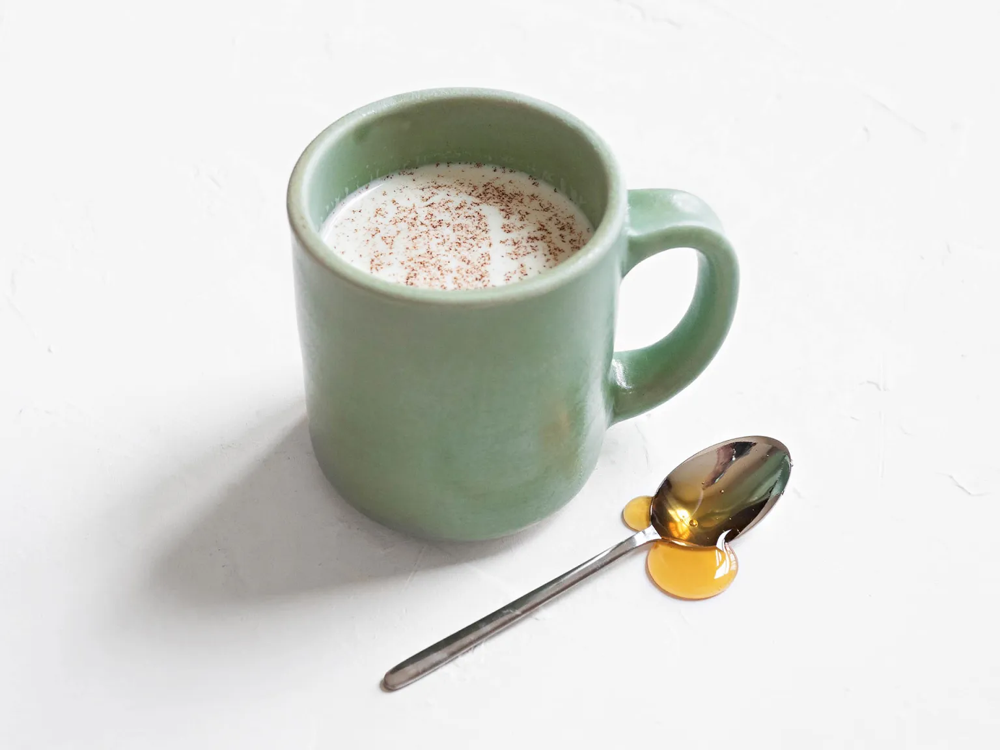

Ponyo's Honey Milk

Description
This honestly looks so good and I want to make it.
Ingredients
- 1 cup milk
- 1 tbsp honey
- cinnamon to sprinkle on top
Instructions
- In a small pot on a stove or in a microwave, heat the milk until steaming but not boiling.
- Pour the hot milk into a mug.
- Sprinkle on cinnamon or any other add-ons you want to include.
- Serve immediately and enjoy!